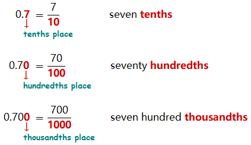

Then one horizontal slice of the block (a "flat") represents one tenth of one whole. One row of the flat (a "stick") represents one hundredth, and one small cube represents one thousandth.
There are ten flats in a whole, ten sticks in a flat, and ten cubes in a stick. Or, in other words, a flat is one tenth of a whole, a stick is one tenth of a flat, and a cube is one tenth of a stick.
A study published in the "Journal of the American Medical Association" found that "calculation and decimal point errors accounted for approximately 15% of all prescribing errors in a tertiary care teaching hospital" and "for almost 70% of all detected medication prescribing errors among children."
We first look at the tenths place; a fraction with more tenths is larger than a fraction with fewer tenths. Thus, 0.4 is the largest fraction in this group, and 0.058 is the smallest.
Next we consider the hundredths place to see that 0.36 is larger than 0.325, because 6 hundredths is larger than 2 hundredths. Thus, the correct order from smallest to largest is
Do not make the \(\alert{\text{ERROR}}\) of thinking that 0.325 is larger than 0.36 because 325 is larger than 36! Remember to compare decimal fractions one decimal place at a time: tenths, then hundredths, etc.
Another common \(\alert{\text{ERROR}}\) is to think that 0.058 is larger than 0.4, because "zero doesn’t count." But in this case the zero tells us that
Similarly, there is more than one way to write any particular decimal fraction. The following decimal fractions are equivalent:

and so on. Each of these fractions reduces to \(\dfrac{7}{10}\text{,}\) or 0.7. Note that the denominator of each decimal fraction is given by the place value of the last digit after the decimal point.
The fractions 0.30 and 0.300 are both equal to \(\dfrac{3}{10}\text{.}\) The fractions 0.03 and 0.030 are both equal to \(\dfrac{3}{100}\text{.}\) We see that an extra zero at the end of a decimal fraction does not change its value.
\(0.15 = \dfrac{15}{100}\text{,}\) and \(0.150 = \dfrac{150}{1000}\text{,}\) which can be reduced to \(\dfrac{15}{100}\text{,}\) so those two fractions are equal. (Both are equivalent to \(\dfrac{3}{20}\text{.}\)) But \(0.015 = \dfrac{15}{1000} = \dfrac{3}{200}\text{.}\)
Another way to get a feel for decimal fractions is to relate them to familiar common fractions. Remember that the fraction bar is actually a division symbol, so the fraction \(\dfrac{1}{2}\) means "1 divided by 2." If you use your calculator to carry out the division, you will find
So if I round the population to 1000’s of people, my town’s population is about 8000. In fact, we can say that any population less than 8500 is about 8000, and a population 8500 or above is about 9000.
In this Example, we are rounding to the nearest tenth. We use the same reasoning as above: because 3 is less than 5, 0.8\(\blert{3}\)7 is closer to 0.8.
In the last Example, we rounded down to the nearest tenth. To decide which way to round, we looked at the next digit, in the hundredths place, to see if it was greater than or less than 5. We did not have to consider the 7 in the thousandths place -- it is too small to make a difference in this case.
When we round to the nearest tenth, we look at the digit in the place. If that digit is less than , we round to the smaller tenth. If that digit is or greater, we round up to the larger tenth.
When we round to the nearest hundredth, we look at the digit in the place. If that digit is less than , we round to the smaller hundredth. If that digit is or greater, we round up to the larger hundredth.
\begin{equation*}
\dfrac{3}{7} = 3 \div 7 = 0.428571 ...~~~~~~~~~\blert{2~\text{is in the hundredths place.}}
\end{equation*}
To round to hundredths, we look at the digit after the hundredths place, which in this case is 8. Beacause 8 is larger than 5, we round up to the next hundredth, to get 0.43. So, \(\dfrac{3}{7}\) is approximately 0.43.
To understand rounding, we need to think about place value. In Example 2.1.16(a), the number \(0.4\blert{28}\) is between \(0.4\blert{20}\) and \(0.4\blert{30}\text{,}\) but it is closer to 0.430, just as 28 is closer to 30 than it is to 20. So we round up to 0.430, or just 0.43.
In part (b), the number \(0.7\blert{14}\) is between \(0.7\blert{10}\) and \(0.7\blert{20}\text{,}\) but it is closer to 0.710, just as 14 is closer to 10 than it is to 20. So we round down to 0.710, or just 0.71.
In Example 2.1.16, it is important to realize that \(\dfrac{3}{7}\) is \(\alert{\text{not equal}}\) to 0.43; it is only \(\alert{\text{approximately equal}}\) to 0.43. Whenever we round off a decimal fraction, the result is always an approximation.
Write the decimal form of each fraction. Round to hundredths if the decimal does not terminate. Is this decimal form exactly equal to the fraction, or an approximation?
How big is one centimeter? A centimeter is 0.393701 of one inch. Round this fraction to the nearest tenth, and compare it to the decimal equivalents of common fractions in Activity 2.
A centimeter is approximately 0.4 of one inch. By consulting Activity 2, we see that 0.4 is equal to \(\dfrac{2}{5}\text{.}\) (Or we can reduce \(\dfrac{4}{10}\) to \(\dfrac{2}{5}\text{.}\)) So one centimeter is a little smaller than \(\dfrac{2}{5}\) of an inch.
For Problems 43-50, write the decimal form of each fraction, rounded to hundredths if necessary. Is this decimal form exactly equal to the fraction, or an approximation?
For Problems 51-58, replace the decimal fraction with one of the familiar common fractions from Activity 2.1.14, so that you can say: "This number is approximately equal to \(\fillinmath{XXX}\text{.}\)"


![Runestone Academy logo]()
![MathJax logo]()